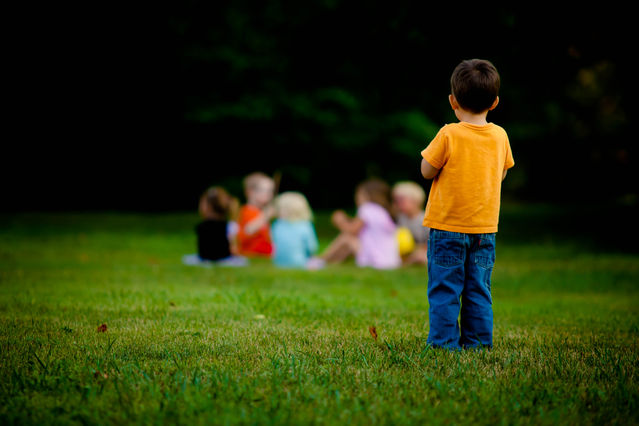

Take the Initiative to Include Him or Her
All children and individuals desire friendships and a sense of belonging in their community. This is especially true for children with autism. They may simply lack the confidence, self-esteem, or communication skills that are comparable to their peers.
- Kids with Autism most likely, desperately want to be included but might not know how to ask. Be specific about what you want them to do. You may need to ask a few times or use gestures and simple words to help them understand.
- Helping children and individuals build their self-esteem and self-confidence is essential to increase their chances of living an independent life.
- Inclusion is a greatly overlooked aspect of a person with autism's life. Many children struggle because they go through life without friends, often ignored by the general public. Think about it—imagine if you or your child had to go through life this way. Would you care to try all the therapies and tests expected of you if you were treated as if you didn't exist? We can and should do better!
- So PLEASE, take the initiative to include a child you know who isn't included. Even if they seem to not want to be around others, chances are they do but have been rejected too many times and have given up.
